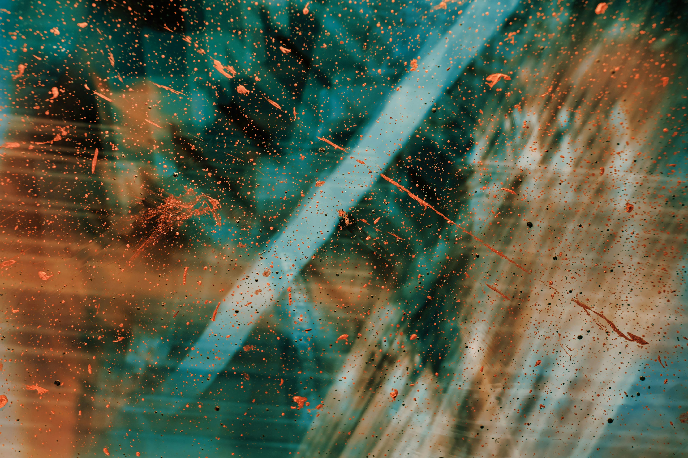
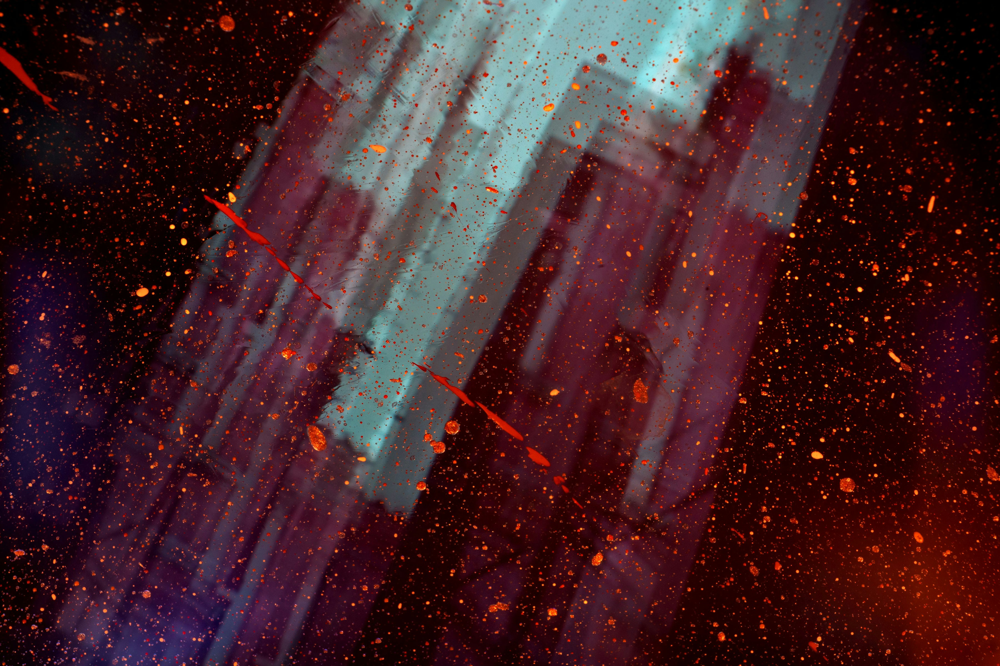

Olá!, seja bem vindo(a) ao meu Portifólio
UI/UX | QA | Full-stack
Formada em Análise e Desenvolvimento de Sistemas, com 4 anos de estudos e prática em análise de requisitos, testes manuais, UI/UX Design e desenvolvimento fUll-stack.
Meus Projetos
Sobre mim

Meu interesse por tecnologia começou ainda na infância, quando desenvolvi uma curiosidade genuína pela arquitetura e pelo funcionamento dos computadores. Na época, porém, meu acesso à tecnologia era limitado aos momentos das aulas de informática, que apresentavam uma abordagem bastante introdutória sobre o tema.
Minha aproximação com a programação aconteceu posteriormente, por meio de uma oficina de desenvolvimento de jogos oferecida pelo Instituto CCA, onde tive meu primeiro contato com o Scratch e com os fundamentos da programação. Essa experiência despertou ainda mais meu interesse pela área e me motivou a conhecer diferentes campos da Tecnologia da Informação.
Em 2023, ingressei no ensino técnico(ETEC) em Desenvolvimento de Sistemas, experiência que me proporcionou acesso a recursos, conhecimentos e projetos que contribuíram para o início da minha trajetória profissional na área de tecnologia. Atualmente, curso Jogos na FATEC, área que sempre despertou meu interesse e que me permite aprofundar meus conhecimentos em desenvolvimento, tecnologia e criação de experiências interativas.
Neste momento, meu principal objetivo é ingressar no mercado de tecnologia na área de UI/UX Design ou Quality Assurance.